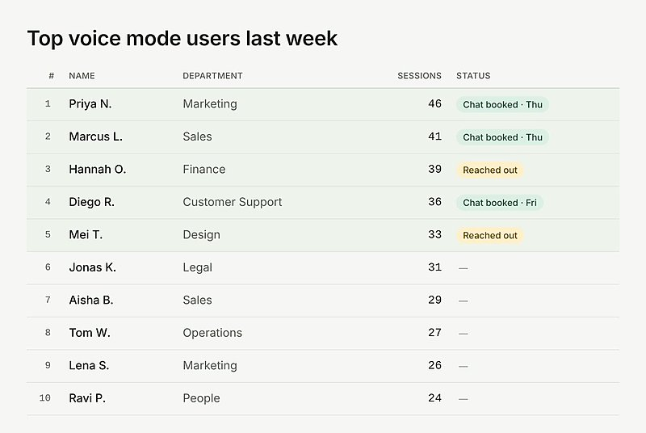
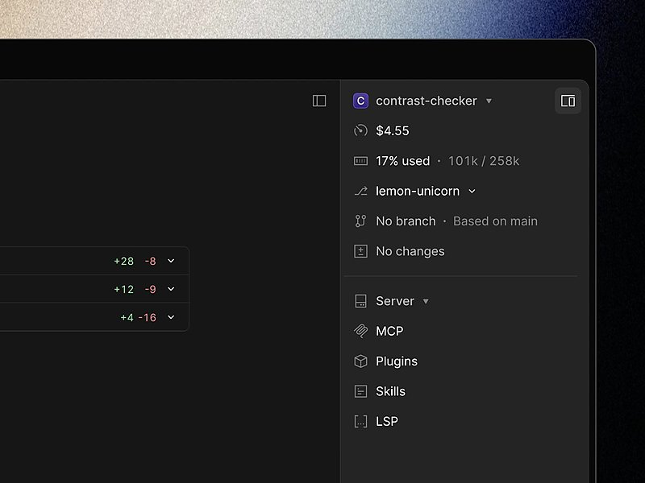

AI 日报 · 10月9日
AI 安全走向开放扫描，团队 Agent 走向共享
Anthropic 推出面向关键基础设施与开源项目的防御计划，Google 开放用自然语言创作游戏的 Playground。Builder 讨论团队工作流、精准提示和工程取舍；Every 分享从个人 Agent 转向共享 Agent 的实践。
开源安全
共享 Agent
自然语言创作
GitHub Trending
7
Builder 动态
4
今日上榜项目
4
官方资料
1
公开视频
今日要点
深度对话
Every：为何从个人 Agent 转向公司共享 Agent
Every 的 Dan Shipper 与平台负责人 Willie Williams 在 10 月 7 日的访谈中回顾团队 Agent 的迭代。以下是他们对自身组织的经验，不代表所有团队都应采用同一架构。
个人 Agent 的维护成本会累积
团队最初让成员各自运行 Agent；随着底层变化、设备故障和工具更替，许多人不愿持续维护自己的实例。这促使 Every 转向更统一的工作入口。
共享上下文更适合协作流程
Williams 认为，公司 Agent 能随团队使用逐渐积累流程知识；个人 Agent 则需要反复补齐组织上下文。访谈同时保留个人生活场景对个性化 Agent 的需求。
先有稳定底座，再按团队分化
Shipper 设想共享 Agent 继续存在，并在专门需求出现时分化成团队 Agent。这是其产品判断，组织规模、权限和维护能力仍会影响选择。
资讯精选
官方发布与规则更新
Anthropic｜开源项目可自愿申请模型扫描
OSS Scanner 向符合条件的开源项目提供免费、定期的模型扫描。Anthropic 明确说快速通道的报告未经人工审核，可能误报；维护者仍需自行复现和判断修补优先级。
Anthropic｜更新 Claude 使用政策
新版政策集中说明欺骗性活动、选举干扰、武器软件、监控、高风险建议和自主物理行动的边界；Anthropic 表示多数改动旨在澄清既有规则，新版 11 月 12 日生效。
Google｜Playground 开放文字生成游戏
平台支持从提示词创建并试玩游戏，部分类型支持多人玩法和排行榜；公开发布的作品要经过安全筛查。面向美国成年用户，创作额度按 Google AI 订阅层级逐步开放。
Builder 动态
工作流与工程取舍的七条现场观察
Thibault Sottiaux｜Codex cloud 已重新发布
OpenAI 的 Sottiaux 表示团队悄然重新发布了 Codex cloud，并称当前体验改善。帖子没有提供改动清单或测量数据，因此只能作为产品动态。
Cat Wu｜从使用数据直接找到访谈对象
Anthropic 的 Wu 分享产品经理用法：让 Claude 找出上周某功能的高频用户、生成前十名清单，再联系对方安排访谈。配图是示意性的用户表，不应视为真实客户数据。

Thariq｜跨领域工作需要先补齐表述精度
Anthropic 的 Thariq 观察到，用户在陌生领域常因计划和提示不够精确而反复迭代。他建议借助模型学习不熟悉的知识；这是个人观察，并非量化研究。
Google Labs｜Playground 以自然语言做游戏
Google Labs 发布 Playground 演示，称无需编程经验即可构思并试玩游戏；目前仅向美国 18 岁以上用户开放。产品能力与可用范围以官方博客为准。
Amjad Masad｜桌面 Agent 的安全边界
Replit CEO Masad 指出桌面 AI 应用可能带来供应链攻击和 Agent 误操作风险，并表示 Replit 正与微软合作、计划采用 NVIDIA OpenShell。帖子没有给出产品上线时间。
Guillermo Rauch｜优化需要停止条件
Vercel CEO Rauch 提醒，即使 Agent 可以持续加固和优化程序，时间、注意力与机会成本依然存在；团队应针对真正会遇到的输入和性能瓶颈做取舍。
Nan Yu｜生产力工具侧栏趋于同一形态
OpenAI 产品负责人 Nan Yu 用一张界面截图调侃生产力应用逐渐收敛到相似布局。它是设计观察，并非关于某产品功能或市场份额的结论。

GitHub Trending
今日上榜项目


根据 10 月 9 日 GitHub Trending 实时榜单整理；星标和分叉为本次 GitHub API 快照，会持续变化。避开昨日重点项目。
今日思考
今天的三条线索都指向同一问题：模型能发现漏洞、生成游戏，也能协助团队流程，但产出进入真实环境前需要有人能验证、维护和承担后续工作。Anthropic 明示扫描报告可能不准确；Every 也经历了个人 Agent 难以持续维护。今日一问：你的团队若明天收到十倍数量的 Agent 产出，谁来复现、筛选并维护它们？
参考来源
Anthropic｜Cyber Mission
Anthropic｜OSS Scanner
Anthropic｜2026 使用政策更新
Google｜Playground
Every｜公司共享 Agent 访谈视频
Every｜访谈逐字稿
Thibault Sottiaux｜Codex cloud
Cat Wu｜产品访谈用例
Thariq｜跨领域提示
Google Labs｜Playground 演示
Amjad Masad｜桌面 Agent 安全
Guillermo Rauch｜工程取舍
Nan Yu｜应用布局
GitHub｜10 月 9 日 Trending
morluto/rea
thedotmack/claude-mem
anthropics/knowledge-work-plugins
storytold/artcraft